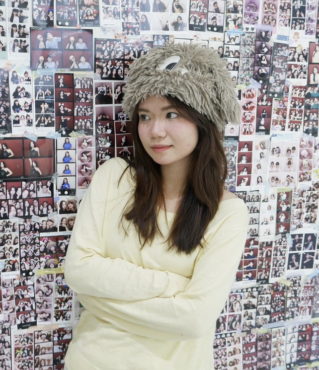
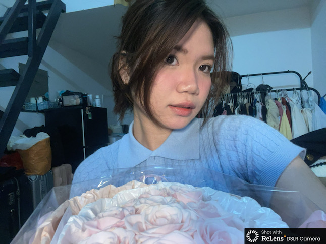

Gửi bé iu của anh
Nhân dịp sinh nhật này, anh muốn tặng em một món quà độc nhất trên thế giớii cho người đáng iu nhất thế giớii. Đây là lần đầu tiên chúng ta đón sinh nhật cùng nhau nên anh muốn tạo một bất ngờ cho em, dù có hơi xấu nhưng mà em hãy hoan hỉ nhé hihi :3
Đôi lời của anh
Hi b√© iu, v·∫≠y l√† ƒë√£ ƒë∆∞·ª£c n·ª≠a nƒÉm ch√≠nh th·ª©c chúng ta ·ªü b√™n nhau. Anh cảm ∆°n em v√¨ su·ªët khoảng th·ªùi gian qua ƒë√£ lu√¥n ·ªü b√™n c·∫°nh anh. T·ª´ lúc h·ªçc ·ªü qu√¢n s·ª± anh ƒë√£ c·ªë g·∫Øng r·∫•t nhi·ªÅu ƒë·ªÉ c√≥ th·ªÉ h·∫πn h√≤ v·ªõi em hihi :3. M·∫∑c d√π c√≥ v√†i s·ª± giúp ƒë·ª° nhưng m√† c≈©ng do anh th√≠ch em nh√¨u m√≤ phải hongg. Lúc em kh√¥ng rep n·ªØa, anh c·ªØ ng·ª° m√¨nh ƒë√£ h·∫øt c∆° h·ªôi r√≤i, nhưng nh·ªù s·ª± m·∫∑t d√†y c·ªßa anh n√™n m·ªõi c√≥ c∆° h·ªôi ƒë∆∞·ª£c g·∫∑p em n√®e. Sau ƒë√≥ bu·ªïi h·∫πn ƒë·∫ßu theo anh nh·ªõ l√† ·ªü quán Anchor, 2 ƒë·ª©a c·ª© ng·ªìi n√≥i ƒë∆∞·ª£c chút r·ªìi im l·∫∑ng qu√†i √†, anh c√≤n nh·ªõ h√¥m ƒë√≥ anh c√≤n m·∫∑c ƒë·ªì r·∫•t x·∫•u n·ªØa =))). R·ªìi c·ª© th·∫ø d·∫ßn d·∫ßn th√¨ ƒë∆∞·ª£c m·ªôt tháng, anh nghƒ© ƒë√£ ƒë·∫øn lúc t·ªè t√¨nh r√≤i. Lúc ƒë√≥ em chảnh l·∫Øm nhenn üòè, em k√™u cho th√™m th·ªùi gian suy nghƒ© n√™n anh quy·∫øt ƒë·ªãnh l√πi l·∫°i hihi. L·∫ßn ƒë√≥ anh c≈©ng c√≥ h∆°i ovtk m·ªôt chút n√®, anh nghƒ© em ƒëang t√¨m hi·ªÉu m·ªëi khác c∆° ƒë·∫•y :)))). Anh d·ª± ƒë·ªãnh s·∫Ω h·ªèi l·∫°i em v√†o 2 tháng sau ƒë√≥ cho tr√≤n 3 tháng, nhưng anh l·∫°i ng·∫≠p ng·ª´ng m√£i lunn. V√† r·ªìi cu·ªëi c√πng th√¨ ƒëi·ªÅu g√¨ ƒë·∫øn c≈©ng s·∫Ω ƒë·∫øn, anh ƒë√£ d·ªìn h·∫øt can ƒë·∫£m ƒë·ªÉ t·ªè t√¨nh em l·∫°i m·ªôt l·∫ßn n·ªØa. Th·ª±c s·ª± th√¨ lúc ƒë√≥ anh ƒë√£ nghƒ© m√¨nh s·∫Ω ƒë√°nh c∆∞·ª£c h·∫øt v√†o l·∫ßn n√†y v√¨ anh c≈©ng ƒë√£ c·ªë h·∫øt s·ª©c c·ªßa anh r·ªìi. Nhưng may m·∫Øn l√† em ƒë√£ ƒë·ªìng √Ω cho anh ch√≠nh th·ª©c ƒë∆∞·ª£c b∆∞·ªõc ch√¢n v√†o cu·ªôc s·ªëng c·ªßa em. Th·ªùi gian ƒë·∫ßu th√¨ c√≥ v·∫ª v·∫´n chưa quen v·ªõi vi·ªác ƒë√≥ n√™n em c≈©ng kh√¥ng m·ªü l√≤ng nhi·ªÅu. Anh c≈©ng bu·ªìn nhi·ªÅu l·∫Øm nhưng sau anh m·ªõi hi·ªÉu. K·ªÉ t·ª´ ƒë√≥, lúc n√†o anh c≈©ng coi em l√† m·ªôt ph·∫ßn trong cu·ªôc s·ªëng th∆∞·ªùng nh·∫≠t c·ªßa anh. C√≥ em, cu·ªôc s·ªëng c·ªßa anh c√≥ v·∫ª kh·ªüi s·∫Øc h∆°n, anh b·ªõt ƒÉn ch∆°i, b·ªõt c·ªôc c·∫±n v√† c≈©ng h·ªçc ƒë∆∞·ª£c cách ki√™n nh·∫´n h∆°n. Anh c≈©ng ƒë√£ th·ª≠ h·ªçc l√†m m·ªôt v√†i th·ª© handmade. D·∫´u l√† v·∫≠y nhưng anh c≈©ng ovtk m√† em th√¨ v√¥ tư n√™n anh c·ª© bu·ªìn nhi·ªÅu l·∫ßn như th·∫ø. Nhưng b·∫•t c·ª© gi√¢y phút, khoảnh kh·∫Øc n√†o b√™n em anh ƒë·ªÅu r·∫•t tr√¢n qu√Ω. Anh tr√¢n qu√Ω cả nh·ªØng lúc em x√≥u, như l√† chuy·ªán ·ªü r·∫°p phim :)))). Nh·ªØng ƒëi·ªÅu ƒë√≥ s·∫Ω m√£i l√† m·ªôt ph·∫ßn trong nh·ªØng k·ªâ ni·ªám c·ªßa chúng ta m√† hehee üòÑ. Th·∫≠t ra lúc ƒë√≥ anh lo l·∫Øng d·ªØ l·∫Øm, anh s·ª£ em s·∫Ω xảy chuy·ªán g√¨ kh√¥ng hay. Nhưng th·∫≠t may m·∫Øn l√† em ch·ªâ b·ªã ng·ªô ƒë·ªôc th·ª±c ph·∫©m thoii hihi. Ch·∫∑ng ƒë∆∞·ªùng v·ª´a qua ƒë∆∞·ª£c ƒëi c√πng em anh cảm th·∫•y r·∫•t h·∫°nh phúc, anh nghƒ© ƒë√≥ l√† khoảng th·ªùi gian khi·∫øn anh thay ƒë·ªïi v√† tr∆∞·ªüng th√†nh nhi·ªÅu nh·∫•t. Anh xin l·ªói v√¨ trong khoảng th·ªùi gian v·ª´a qua anh ƒë√£ l√†m em bu·ªìn c≈©ng khá nhi·ªÅu l·∫ßn, nhưng mong em h√£y b·ªè qua cho anh nh√© v√¨ anh c≈©ng ƒëang h·ªçc cách phát tri·ªÉn ƒë·ªÉ hi·ªÉu em h∆°n. Anh bi·∫øt anh kh√¥ng tinh t·∫ø, ƒë·∫πp trai, t√†i gi·ªèi như ng∆∞·ªùi khác v√† ƒë√¥i lúc c≈©ng c·ª•c súc v√† n·∫∑ng l·ªùi v·ªõi em n·ªØa. Anh s·∫Ω c√≥ g·∫Øng ho√†n thi·ªán bản th√¢n h∆°n t·ª´ng ng√†y ƒë·ªÉ c√≥ th·ªÉ c√πng em ƒëi con ƒë∆∞·ªùng d√†i nh·∫•t c√≥ th·ªÉ. Anh tr√¢n tr·ªçng nh·ªØng gi√¢y phút b√™n nhau, em l√† c√¥ gái ƒë·∫ßu ti√™n v√† s·∫Ω m√£i l√† ng∆∞·ªùi anh y√™u nh·∫•t. N·∫øu c√≥ ƒëi·ªÅu g√¨ c·∫ßn anh thay ƒë·ªïi th√¨ em c·ª© n√≥i cho anh bi·∫øt nh√©, v√≠ d·ª• như anh b√≠n thái quá, ...v...v..üòú Ngo√†i ra anh c≈©ng mu·ªën nh·∫Øn nh·ªß em phải bi·∫øt gi·ªØ s·ª©c kh·ªèe, ƒë·ª´ng th·ª©c khuya nh√¨u quá m√† h·∫°i s·ª©c kh·ªèe ƒë·∫•y nhá, ra ƒë∆∞·ªùng nh·ªõ mang áo ch·ªëng n·∫Øng, tr√πm k√≠n, v√† quan tr·ªçng l√† phải y√™u anh nh√¨u h∆°n n·ªØa nhaaa üòò. Khi em bu·ªìn hay g·∫∑p chuy·ªán g√¨ th√¨ h√£y nh·ªõ cho anh bi·∫øt nh√©, anh s·∫Ω ·ªü b√™n c·∫°nh em b·∫•t c·ª© lúc n√†o em c·∫ßn. Cảm ∆°n em v√¨ ƒë√£ g√≥p ni·ªÅm vui v√† h·∫°nh phúc kh√¥ng nh·ªè trong cu·ªôc s·ªëng c·ªßa anh. Anh mu·ªën trang web n√†y s·∫Ω l√† n∆°i lưu gi·ªØ nh·ªØng k·ª∑ ni·ªám ƒë·∫πp c·ªßa chúng ta cho cả hi·ªán t·∫°i v√† sau n√†y, n·∫øu c√≥ g√≥p √Ω g√¨ c·ª© cho anh bi·∫øt nh√©. Iu em nh√¨u l√©m, b√© iu c·ªßa anhh üíñ
Khoảnh khắc cùng nhau nèe

Những bức ảnh cũ luôn mang theo một câu chuyện riêng, một phần của dòng thời gian đã trôi qua.
Video photobooth nìa
L·∫ßn ƒë·∫ßu nh√¨n bu·ªìn c∆∞·ªùi nma l·∫ßn sau nh√¨n dth quá √†aaa üòÜ.
Một video của người đáng iu nhất nè!
B√© iu c·ªßa anh xinh quá √†aaaa üòç!
Chúc em sinh nhật vui vẻ!
Anh cún üêæ
Iu em üíù
Ghi chú nhỏ !
Chỉ ai có tấm thẻ mới vào được web này thoiii hihi :3